Giới Thiệu về Nha Trang Xinh Đẹp!!!
Một vài ảnh giới thiếu về Nha Trang xinh đẹp qua ống kính củaThái Phương
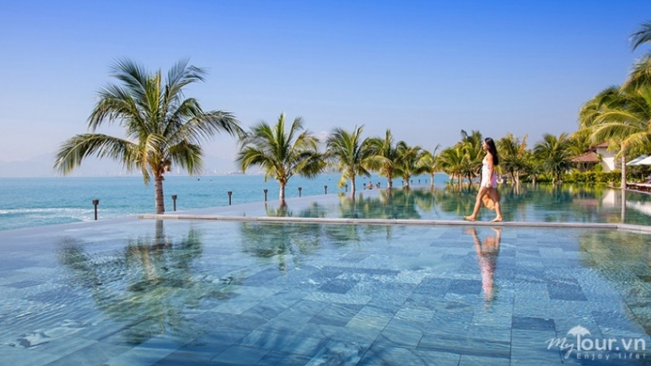
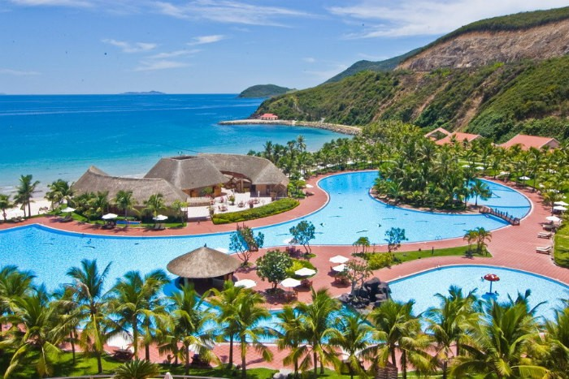
Một số địa điểm du lịch nổi tiếng tại Nha Trang
1. Tháp Bà Ponagar!Đây là một danh lam thắng cảnh nổi tiếng được UNESCO công nhận là Di Sản Văn Hóa Thế Gioi.Kiến trúc được hình thành dựa trên nền kinh tế CamBodia. Được xây dựng cách đây hàng trăm năm. Qua bao nhiêu sóng gió phong ba bão táp, tháp bà vẫn dữ được một nét đẹp nghiêng nước nghiêng thành.
 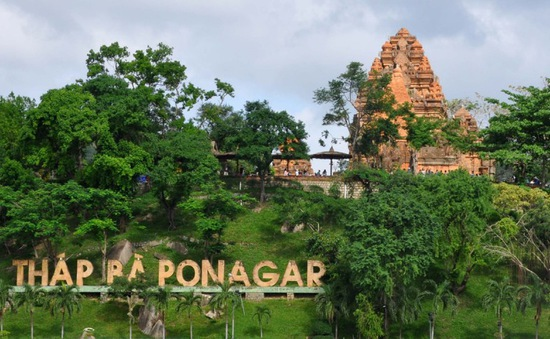
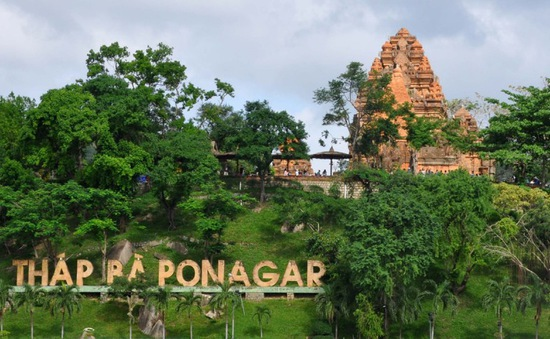
2.Vinperland Nha Trang là một địa điểm nổi tiếng. Bạn không thể không đến NHa trang mà không đi Vinperland. Nhắc đến VINPERLAND với nhiều chổ vui chơi lý tưởng nhiều địa điểm tham quan Bạn có thể qua đó nghĩ dưỡng với các resort và khách sạn đẹp view Biển....
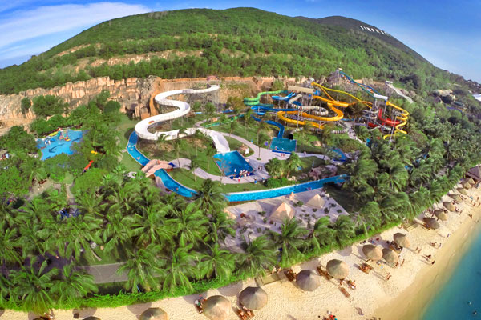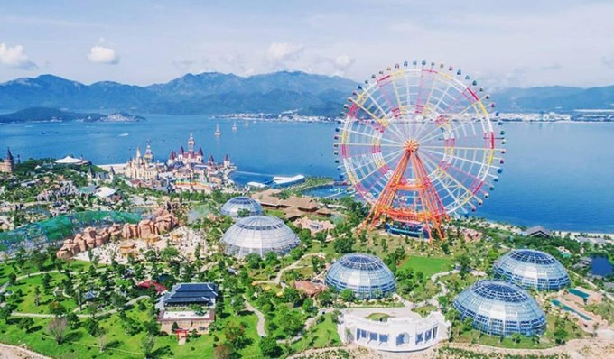Và còn nhiều ĐỊA ĐIỂM khác được chúng tôi tổng hợp, các bạn có thể tham khảo tại đây. Nguồn từ: nhatrangtoday.vn
Một số địa điểm ăn uống nổi tiếng tại nha trang
1. Bánh căn là một loại bánh phổ biến ở vùng Nam Trung Bộ, đặc biệt ở các tỉnh Khánh Hòa, Ninh Thuận, Bình Thuận. Bánh căn có hình dáng gần với bánh khọt ...
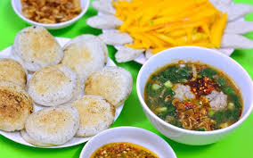 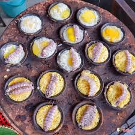Bánh căn bà Hồ
Bánh căn bà Dũng
Bánh căn bà Thắng
2. Nem Ninh Hòa là tên gọi chung cho thứ nem chua và nem nưa chọn và chế biến công phu tng vị đặc bi ở nơi khác
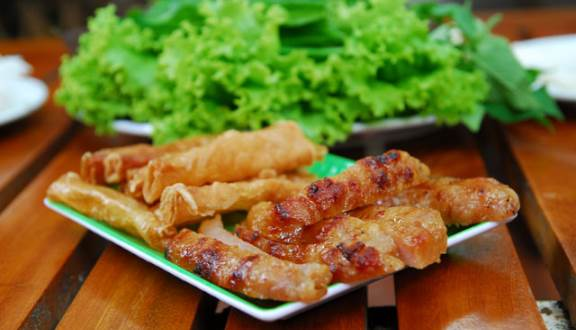 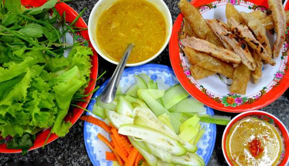Nem Đặng Văn QUyển
Nem Vũ Thành An
Nem Bà Bắp Công Dũng
Và còn nhiều Nhà Hàng Hải Sản khác được chúng tôi tổng hợp, các bạn có thể tham khảo tại đây. Nguồn từ: nhatrangtoday.vn
Một số hotel nổi tiếng tại nha trang
1. Vinperland resort.....
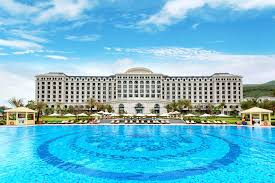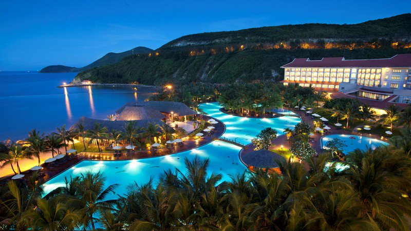2.Mường Thanh ......
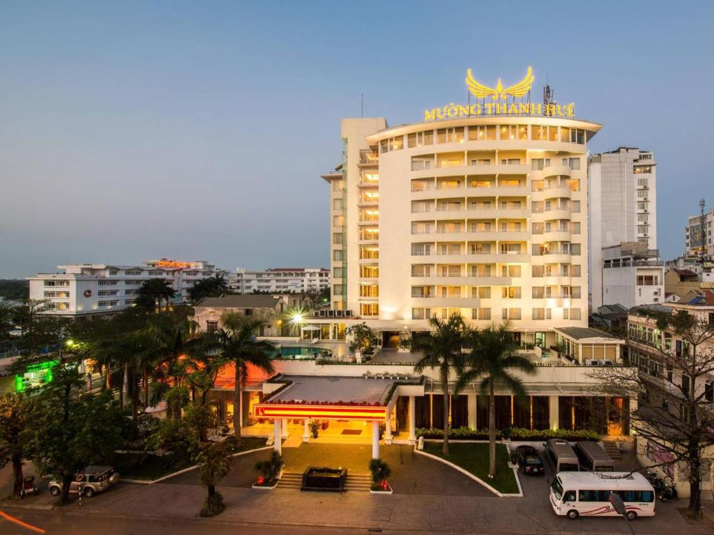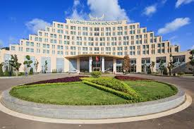Và còn nhiều Khách Sạn khác được chúng tôi tổng hợp, các bạn có thể tham khảo tại đây. Nguồn từ: nhatrangtoday.vn
Các bạn có thể liên lạc với chúng tôi với thông tin dưới đây!!!
| Tên CHủ CTY: | Thái Bá Phương |
| SĐT: | 0905623525 |
| Email: | tphuong1005.ptb@gmail.com |
| MST | 45SF543135WFA231 |
| Địa CHỉ | 101 Mai Xuân Thưởng- TP Nha Trang - Khánh Hòa |